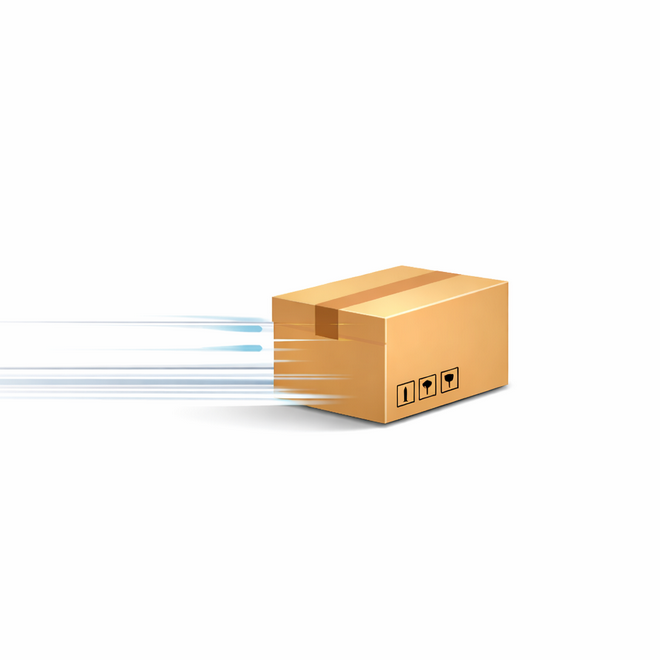
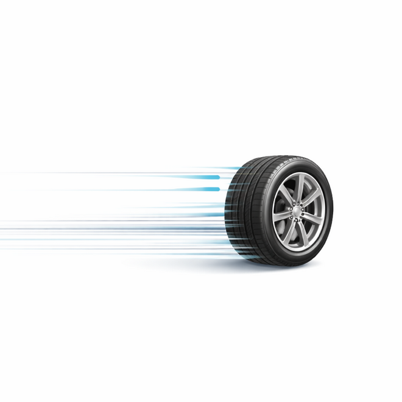
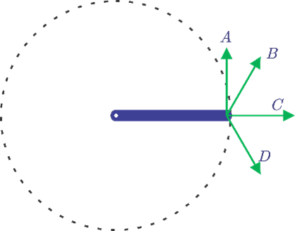

## Dinamika Rotasi dan Kesetimbangan Benda Tegar --- - Torsi atau Momen Gaya - Momen Inersia --- - Sebuah benda yang bergerak pada lintasan lurus dikatakan bergerak secara **translasi**. - Sebuah benda yang bergerak pada pada sumbu putarnya atau pada lintasan melingkar dikatakan bergerak secara **rotasi**. - Ketika benda bergerak secara translasi, benda tersebut dapat menerima gaya eksternal jika diberikan. Gaya yang diberikan ini dapat mengubah arah lintasan benda. - Akan tetapi ketika benda bergerak berputar atau pada lintasan melingkar, benda tersebut dapat pula menerima gaya yang lebih dikenal sebagai *Torsi* --- Translasi atau Rotasi? <div class="r-hstack justify-center"> <div data-id="box1" style="background: #999; width: 200px; height: 230px; margin: 10px; border-radius: 5px;"></div> <div data-id="box2" style="background: #999; width: 200px; height: 230px; margin: 10px; border-radius: 5px;"></div> <div data-id="box3" style="background: #999; width: 200px; height: 230px; margin: 10px; border-radius: 5px;"></div> </div> --- #### Torsi atau Momen Gaya  --- - Analogi gaya untuk gerak rotasi kita sebut **torsi/torka**. - Jika sebuah gaya *F* bekerja pada sebuah partikel di titik *P* yang posisinya terhadap titik pusat *O* diberikan oleh vektor pergeseran *r*, maka torsi *τ* yang bekerja pada partikel itu didefinisikan sebagai: ###### $$\boldsymbol{\tau}=\mathbf r \times \mathbf F$$ ###### $$\tau=r \ F \sin \theta$$ --- Keterangan: - *τ* = torsi atau momen gaya (Nm) - *r* = lengan gaya (m) - *F* = Gaya (n) - *θ* = Sudut antara *r* dan *F* - torsi adalah besaran **vektor**. - torsi benilai positif untuk gaya yang menyebabkan benda berputar searah dengan putaran jam (*clockwise*), dan bernilai negatif jika benda berotasi dengan arah berlawanan putaran jam (*counterclockwise*). --- #### Momen Inersia - Dicetuskan pertama kali oleh Leonhard Euler, momen inersia didefinisikan sebagai kelembaman suatu benda untuk berputar pada porosnya, atau dapat dikatakan ukuran kesukaran untuk membuat benda berputar atau bergerak melingkar. - Besar momen inersia bergantung pada bentuk benda dan posisi sumbu putar benda tersebut. --- - Secara matematis, momen inersia sebuah benda/partikel yang bergerak dengan jari-jari *r* dirumuskan sebagai: ###### $$I=mr^2$$ Keterangan: - *I* = momen inersia (kg m<sup>2</sup>) - *m* = massa benda/partikel (kg) - *r* = jari-jari (m) - momen inersia adalah besaran **skalar**. --- - Benda yang terdiri atas susunan partikel atau benda-benda penyusunnya yang lebih kecil, jika melakukan gerak rotasi, maka momen inersianya sama dengan hasil jumlah semua momem inersia penyusunnya: ###### $$I=\Sigma m_ir_i^2$$ atau ###### $$I=\int r^{2}\ dm$$ --- #### Momentum Sudut - Momentum sudut adalah ukuran kesukaran untuk mengubah arah gerak benda yang sedang berputar atau bergerak melingkar. - Momentum sudut dirumuskan dengan: ###### $$\mathbf L=I\boldsymbol \omega=m\mathbf r\times\mathbf v=\mathbf r\times\mathbf p$$ ###### $$L=I\omega=mvr=pr$$ --- Keterangan: - *L* = momentum sudut (kg m<sup>2</sup>s<sup>-1</sup>) - *I* = momen inersia benda (kg m<sup>2</sup>) - *ω* = kecepatan sudut benda (rad/s) - *m* = massa benda (kg) - *v* = kecepatan linear (m/s) - *r* = jarak benda ke sumbu putarnya (m) --- #### Energi Kinetik Rotasi - Energi kinetik rotasi adalah energi kinetik benda yang bergerak rotasi, dirumuskan dengan: ###### $$EK_R=\frac 1 2I\omega^2$$ - Jika benda tersebut bergerak secara rotasi dan juga tranlasi, maka energi kinetik totalnya adalah gabungan dari energi kinetik translasi dan energi kinetik rotasi: ###### $$EK=EK_T+EK_R=\frac 1 2mv^2+\frac 1 2I\omega^2$$ --- Keterangan: - *EK* = Energi kinetik total benda (J) - *EK<sub>T</sub>* = Energi kinetik translasi benda (J) - *EK<sub>R</sub>* = Energi kinetik rotasi benda (J) --- #### Hukum II Newton Untuk Rotasi - Benda yang bergerak secara translasi menggunakan Hukum Newton II (**$\Sigma F=ma$**) dan benda yang bergerak secara rotasi juga memakai konsep hukum Newton yang sama, akan tetapi besarannya memakai besaran-besaran rotasi. - Sehingga, Hukum Newton II untuk benda yang bergerak secara rotasi atau bergerak melingkar memakai rumus: ###### $$\boldsymbol\tau=I\boldsymbol\alpha$$ --- Keterangan: - *τ* = torsi atau momen gaya (Nm) - *I* = momen inersia (kg m<sup>2</sup>) - *α* = percepatan sudut benda (rad/s<sup>2</sup>) --- #### Perbandingan Besaran pada Gerak Translasi dan Rotasi | Translasi || Rotasi || |---|---|---|---| | **Besaran** | *Simbol* | **Besaran** | *Simbol* | | Perpindahan | $x$ | Perpindahan sudut | $\theta$ | | Kecepatan | $v$ | Kecepatan sudut | $\omega$ | | Percepatan | $a$ | Percepatan sudut | $\alpha$ | | Massa | $m$ | Momen inersia | $I$ | --- | **Besaran** | *Simbol* | **Besaran** | *Simbol* | |---|---|---|---| | Momentum | $p=mv$ | Momentum sudut | $L=I\alpha$ | | Gaya | $F=ma$ | Torsi | $\tau=I\omega$ | | Energi kinetik tranlasi | $EK_T=\frac 1 2mv^2$ | Energi kinetik rotasi | $EK_R=\frac 1 2I\omega^2$ |